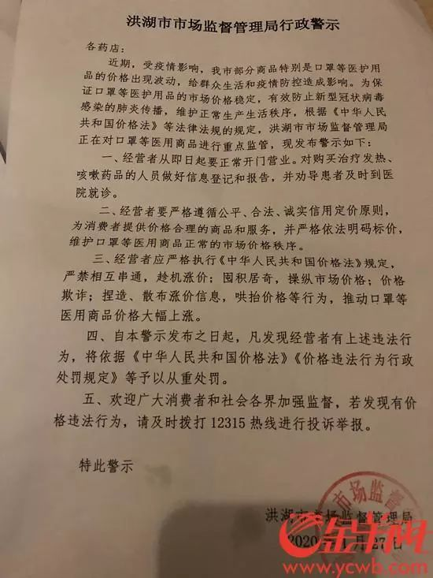
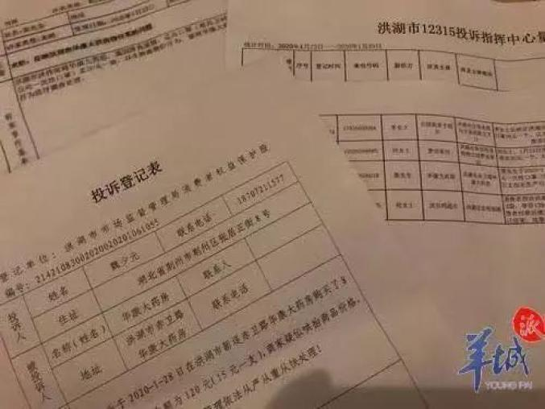
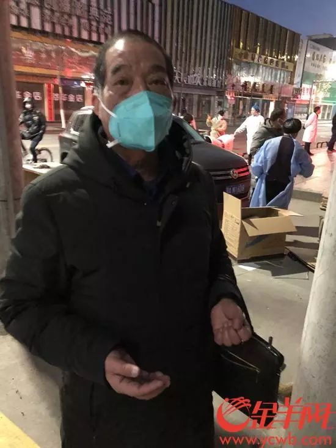
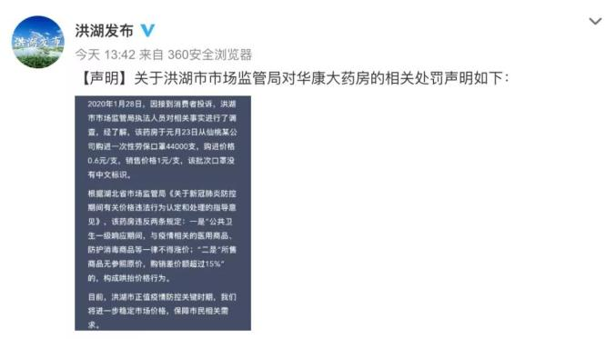
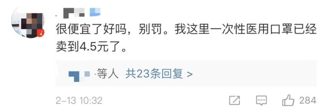

邵阳日记
原文链接 备份链接 邵阳日记 _ 小新 _ _ _ _ _ _ 我的家在湖南省邵阳市邵阳县塘田市镇，1月10日，我从广州的学校回到老家。本来准备好过一个安逸的寒假，结果突如其来的疫情让周围的一切都不再平静。 _ _ _ _ ●口罩● _ …
2020-02-13 16:30 来源：澎湃新闻·澎湃号·媒体
字号
昨日，一则
“进价6毛的口罩售价1元被罚”的消息
在网络上引发争议。

据羊城晚报13日消息，目前湖北省洪湖市已对该处罚启动重新调查，同时纪检部门也介入调查是否存在执法人员违纪等情况。


图片来源：羊城晚报
被处罚药店的老板毛先生在现场接受记者采访时表示，他并不支持口罩卖高价，被罚是内部沟通出了点问题。
毛先生告诉记者，这次疫病，他还向红十字会捐了5万块钱，他经营的一家医院也腾出来给政府专门收治新冠肺炎病人。“我的觉悟不会那么低，主要是药店最近我交给我女婿管了，他不太了解情况，因为口罩的进价一直在涨，这次涨价也没有跟我说。”

被罚药店老板毛先生 图片来源：羊城晚报
毛先生说，他没有去申请复议，也不想评价罚款是否有问题，但确实认为口罩在这个时期不应该涨价。
记者在洪湖市几个较大的药店了解到，目前口罩仍有存货，普遍卖得不贵，一个医用外科口罩卖1块元左右，但有些药店要凭身份证限量购买。
此前回顾
据微信公众号“今日洪湖”9日消息，湖北洪湖一药房将进价0.6元的口罩卖1元，涉嫌哄抬价格被洪湖市市场监管局查处，没收违法所得14210元，罚款42630元。
12日下午，洪湖市市场监管局通过微博@洪湖发布 对相关处罚作出回应，表示该药房违反了两条规定。

声明称，2020年1月28日，因接到消费者投诉，洪湖市市场监管局执法人员对相关事实进行了调查，经了解，该药房于元月23日从仙桃某公司购进一次性劳保口罩44000支，购进价格0.6元/支，销售价格1元/支，该批次口罩没有中文标识。
声明称，根据湖北省市场监管局《关于新冠肺炎防控期间有关价格违法行为认定和处理的指导意见》，该药房违反两条规定：一是“公共卫生一级响应期间，与疫情相关的医用商品、防护消毒商品等一律不得涨价”；二是“所售商品无参照原价，购销差价额超过15%”的，构成哄抬价格行为。
报道消息和声明出来后，在网络上引起较大争议，不少网友认为，一块钱的口罩在“一罩难求”的当下完全是“良心价”，处罚哄抬物价不可理解。




针对该处罚，微博@国是直通车 采访了中国政法大学法治政府研究院院长王敬波。王敬波表示，这种处罚属于执法过度。疫情期间，各地政府虽应从重从快从严打击涉疫情产品的违法行为，但也要慎重执法。

来源：中国青年报综合羊城晚报（记者 温建敏）、“今日洪湖”微信公众号、@国是直通车等
责任编辑：王雪
推荐阅读
请长按二维码进行关注
人民法治
为良法善治发声
为公平正义张目
为法治中国建言
为中华复兴鼎力
原标题：《口罩进价6毛卖1元被罚？官方回应了！》
关键词 >> 媒体号
特别声明
本文为媒体在澎湃新闻上传并发布，仅代表作者观点，不代表澎湃新闻的观点或立场，澎湃新闻仅提供信息发布平台。

澎湃新闻APP下载

原文链接 备份链接 邵阳日记 _ 小新 _ _ _ _ _ _ 我的家在湖南省邵阳市邵阳县塘田市镇，1月10日，我从广州的学校回到老家。本来准备好过一个安逸的寒假，结果突如其来的疫情让周围的一切都不再平静。 _ _ _ _ ●口罩● _ …
原文链接 备份链接 这是系列报道的第五篇，发自新疆小城的「个人志」。17 年前，这座城市曾侥幸躲过「非典」，而 17 年后，在这场「新冠肺炎」疫情面前，乐观幻灭了，人人自危且心痛。以此为切口，我们想知道，中国人是从这场疫情开始才失去了乐观 …
原文链接 备份链接 _ 编者按：这是海螺收到的第三篇投稿。作者一帆在对湖北省内病毒扩散毫不知情的情况下踏上返乡探亲之旅，因为当时媒体都还只是提到武汉，而她从广州回洪湖的自驾并不必经武汉，所以大家都以为没关系。即使到达洪湖之后，在当地也没有 …
原文链接 备份链接 记者从河南省长垣市公安局获悉，涉事“黑”作坊负责人已被警方刑事拘留。然而，在警方切断了这一条假冒伪劣口罩的生产线后，湖南、湖北、河南、安徽、辽宁等地有消费者反映，自己购买到疑似假冒的“飘安”口罩。 全文3354字，阅读 …
原文链接 备份链接 作者：刘倩 来源：*商业人物*（ID：*biz-leaders）* 截至2月4日6时，天津已有新型冠状病毒肺炎确诊病例66例，在动车客车段乘务车间和宝坻区百货大楼都出现了聚集性发病，企业复工和学校开学时间一再延期，至 …